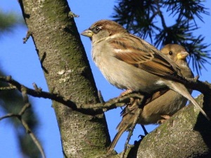

Le moineau domestique
Le moineau mâle est un bel oiseau coloré qui se distingue par sa couronne et sa nuque grise avec
des coins brun chocolat des deux côtés de la tête, par son bavoir noir, contrastant avec les
joues blanches. Plus la bavette du mâle est grande, plus il connaît de succès auprès des
femelles. Le dessus est un mélange de brun, de sable et de gris avec des barres blanches dans
les ailes. Dans les villes, leur plumage est souvent plus terne qu'en milieu rural.
La femelle du moineau domestique, de même que les jeunes sont des oiseaux plus ternes. Elle n'a
pas de noir sur la tête. Cependant, si on l'observe de très près, on remarquera la gamme subtile
des tons de brun et de gris de son plumage avec le dessus rosâtre terminé par du noir, le
dessous gris rosâtre et une large rayure crème au-dessus et derrière l'œil.
Comportement
De tous les oiseaux de jardin, le moineau est certainement l'espèce qui est la plus associée à
l'homme. Granivores à l'origine, ils ont modifié depuis leurs habitudes alimentaires en exploitant
les milieux peuplés par l'homme, ce qui leur a permis de coloniser le monde entier. Dans les villes,
ils capturent les papillons nocturnes attirés par les réverbères et recherchent les insectes écrasés
sur les calandres de voitures.
Les moineaux sont des oiseaux sociables très fascinants qui opèrent en bandes non territoriales, se
ressemblant souvent en troupes bruyantes, turbulentes, se chamaillant sans cesse pour la nourriture
en dévorant de manière opportuniste, tout ce qui est comestible au gré de leurs déplacements. Les
autres oiseaux quittent les endroits surpeuplés. Ils écartent souvent les mésanges charbonnières et
les mésanges bleues des mangeoires.
Les facultés d'adaptation des moineaux sont étonnantes. Ils ont appris à extraire les cacahuètes des
filets, se livrant même au vol sur place ou en se suspendant à la manière des mésanges, pour
extraire les noix des distributeurs qui leur posent des difficultés.
Au printemps, il est fréquent de voir des moineaux se poursuivre en criant et s'arrêter dans un
arbre, où ils vont et viennent et semblent se disputer vivement. En fait, ces groupes comprennent
une femelle entourée de mâles qui la courtisent avec empressement ; elle essaie de les écarter,
aidée par son partenaire, mais l'entreprise est souvent ardue…
Habitat
C'est un des oiseaux les plus communs et les plus répandus dans nos jardins, On le trouve partout, à
proximité des habitations, dans les campagnes comme dans les villes, essentiellement à proximité de
l'homme, mais le moineau domestique commence à connaître un déclin de sa population dans de
nombreuses zones rurales et le jardin sera probablement à l'avenir d'une importance vitale pour lui.
Aire de répartition
Très commun partout.